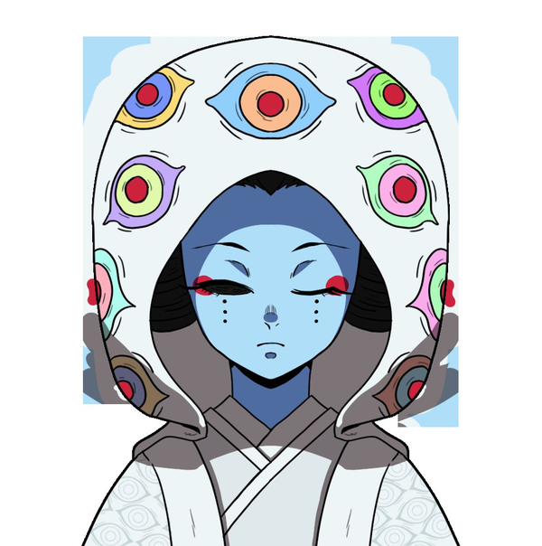

Demônio 鬼
Artes Demoníacas de Sangue, anatomia extraordinária e a herança das 12 Belas Luas.
Habilidades de Classe
- Arte Demoníaca de Sangue (ADS)
- Uma habilidade única derivada do seu poder demoníaco, inspirada nas técnicas das Doze Luas. Cada Arte reflete sua natureza e estilo de luta, permitindo ataques que combinam ou utilizam vários efeitos. Jogadores podem usar exemplos prontos do módulo ou projetar os próprios, criando uma habilidade-assinatura. Esses ataques aumentam de poder quanto mais tempo você joga, mas custam pontos de sangue ganhos por descanso ou por comer carne humana.
- Anatomia Extraordinária
- Os traços antinaturais que moldam sua forma demoníaca — asas, guelras, tentáculos ou armas crescidas da própria carne definem como seu corpo funciona e luta. Uma vez escolhidos, permanecem por toda a campanha, embora possam evoluir uma vez antes do último nível. São ferramentas adicionais além das artes de sangue, mas podem ser usadas em conjunto.
Progressão e Patentes
As patentes demoníacas seguem uma estrutura de poder estranha nesta era: as “luas” existem, mas em escala diferente do reinado de Muzan Kibutsuji. “Lua Superior” e “Lua Inferior” não existem mais como patente nominal — os 12 demônios mais fortes carregam o título de “Lua” junto de um título próprio, devido à pequena diferença de poder entre eles. As patentes abaixo servem apenas para escalar o poder em referência ao modelo antigo.
| Nível | Patente | Atributos (conjunto adicional) |
|---|---|---|
| 1 | Patente Baixa | (4, 3, 2, 1, 1, 1) |
| 2 | Patente Alta | (4, 4, 3, 3, 2, 1) |
| 3 | Discípulo de Lua Inferior | (5, 5, 4, 3, 3, 2) |
| 4 | Lua Inferior | (6, 6, 5, 5, 4, 4) |
| 5 | Discípulo de Lua Superior | (9, 7, 6, 6, 6, 5) |
| 6 | Lua Superior | (10, 10, 10, 9, 9, 8) |
Para criar os atributos de um demônio, comece com a distribuição normal da criação de personagem (0, 1, 2, 3, 3, 5) e depois some o conjunto de números correspondente à patente pretendida.
- Vida: (PV inicial) + (5 × Força)
- Vigor: demônios não precisam de vigor — seus corpos não se cansam.
- Pontos de Sangue Demoníaco (total): 10 × Fortitude
- Cura Demoníaca por patente: 1d10 (Baixa), 2d10 (Alta), 1d20 (Disc. L. Inferior e Lua Inferior), 1d100 (Disc. L. Superior e Lua Superior).
Ações do Demônio
Demônios têm, conforme seu nível, a capacidade de realizar mais de uma ação por turno: ações = 1 + (Velocidade ÷ 5). Saber usá-las — curar, atacar ou ativar a arte de sangue — é essencial para a sobrevivência. Como os humanos, movem-se a cada rodada, embora o deslocamento varie conforme as habilidades e o formato do corpo.
| Ação | Descrição |
|---|---|
| Arte de Sangue | Conforme a linhagem, demônios têm acesso a algumas artes demoníacas comumente compartilhadas, além das suas próprias. |
| Curar (2 PSD) | Conforme a patente, curam uma quantidade significativa de vida usando uma de suas ações no turno. |
| Regenerar (4 PSD) | Usando uma ação, o demônio regenera partes do corpo removidas, com velocidade variável conforme a força de sua patente. |
| Purificar | Usando uma ação, o demônio limpa 1 acúmulo de veneno por patente. |
| Infectar | Demônios de Lua Inferior ou acima podem infectar seres humanos, transformando-os em demônios 4 patentes abaixo do doador. |
| S.O.S. | Demônios de um ramo podem chamar demônios próximos da mesma linhagem. Linhagens diferentes não têm conexão entre si e não podem pedir ajuda umas às outras. |
| Executar | Demônios de patente Discípulo de Lua Superior ou Lua Superior podem executar um ser humano com 5 PV ou menos. Execuções não podem ser esquivadas, mas podem ser reagidas. |
| Atacar | Usando uma ação ou ponto de reação, atacam com os ataques comuns a todos os demônios. |
| Bloquear | Como reação a um ataque, ou como ação preventiva, preparam-se para bloquear um golpe. |
| Esquivar | Usando uma reação comum ou ponto de reação, evitam ataques que venham em sua direção. |
Anatomia Extraordinária
Pontos iniciais: 15
- Asas — 3 pontos
- Um par de asas brota do seu corpo, concedendo voo de 9 m por rodada.
- Braços Extras — 2 pontos por braço (máx. 4)
- Membros adicionais crescem do corpo, permitindo empunhar mais armas de uma vez. Um ataque adicional por par de braços ganho.
- Olhos Múltiplos — 1 ponto por olho
- Bônus de +5 em testes de percepção.
- Forma Maleável — 5 pontos
- Transfigure o corpo em qualquer forma desejada relativa ao seu tamanho. Sofrer dano reverte a forma. Fora supersentidos, a forma é indistinguível ao olho humano.
O documento também deixa um modelo aberto — “Nome: Descrição / Custo em pontos” — para criações próprias.
Construindo Artes Demoníacas de Sangue
Construir artes de sangue é simples, já que elas variam muito em dano, alcance e outros aspectos. Cada ataque terá dano, alcance e efeitos predefinidos. Na criação do personagem, demônios recebem pontos iniciais para projetar seus primeiros ataques; conforme avançam, desbloqueiam mais tipos de ataque e melhores customizações.
- Dano — a parte mais importante; aumenta de escopo conforme o nível do demônio. Pode ser afetado por certos efeitos, então fique de olho nos bônus e ônus de cada um.
- Alcance — uma das únicas partes que varia loucamente de nível a nível; não há aumento constante de distância.
- Slots de Efeito — a quantidade de efeitos que um ataque de arte de sangue utiliza sem se desfazer. Quanto mais forte o ataque, menos efeitos ele pode usar — ataques fracos são melhores para afligir condições.
Variantes — As 12 Belas Luas

Das 12 variantes demoníacas, 12 classes de demônio estão disponíveis para quem… quiser ser demônio. Cada variante tem uma seleção própria de habilidades, herdadas de seu predecessor. Os demônios da nova era aprenderam um truque aterrorizante: agora replicam sozinhos. O problema: se forem fracos demais, suas replicações morrem com eles. Para garantir a segurança de seu trono, a rainha demônio criou um esquadrão de 12 demônios de nível Lua Superior. Esses 12 raramente se mostram e agem como líderes de exércitos menores — e, devido ao seu poder, todos os subordinados assumem atributos do líder. Encontrar esses lacaios pode levar os jogadores de volta a seus líderes; eliminá-los reduziria a população demoníaca em 1/12 — uma vitória massiva para a humanidade. Veja mais sobre a Árvore do Mal.
| Prefixo da Lua | Características de identificação |
|---|---|
| Lua Dourada | Discípulos identificados apenas por trajes dourados. |
| Lua Ardente | Chamas, marcas de queimadura, cicatrizes de fogo, cinzas. |
| Lua Raivosa | Pelos, presas afiadas, olhos de animal. |
| Lua Mecânica | Engrenagens, relógios, peças mecânicas ou armaduras de metal. |
| Lua Ancestral | Ossos. Só… ossos. |
| Lua Espelhada | Espelhos ou superfícies refletoras. |
| Lua Sombria | Nenhuma característica identificável conhecida. |
| Lua Enlutada | Trajes formais, gore parcial, marcas de lágrimas. |
| Lua do Jardim | Flores, plantas, flora, frutas ou vegetais. |
| Lua Artesã | Identificados pelas ferramentas de artesanato que carregam. |
| Lua Mergulhante | Vida marinha, crustáceos e apetrechos de pesca. |
| Lua de Retalhos | Tecido, especialmente lona, ou remendos de panos indistintos. |
Arte de Sangue por Variante
No documento original, apenas a Lua Ardente tem sua arte de sangue preenchida (e a Lua Enlutada tem só os nomes dos ataques: Envoltório Negro, Rosa, Azul e Vermelho, Buquê e Anel). As outras dez variantes têm fichas em branco. As habilidades são lidas da coluna esquerda (níveis 1–3) para a direita (níveis 4–6).
Arte Demoníaca de Sangue | Lua Ardente
- Nível 1 (Patente Baixa) — Ataque: Queimar · 4 PSD
- Discípulos da lua ardente sempre podem lançar fogo, causando no mínimo 1d4+Fortitude. Ao acertar, também inflige um acúmulo de Queimadura. Rola Fineza contra a CA do alvo.
- Nível 1 — Habilidade: Pele Ardente
- O corpo do discípulo permanece sempre em chamas de alguma forma: ataques físicos (desarmados) contra ele sempre infligem um acúmulo de Queimadura.
- Nível 2 (Patente Alta) — Ataque: Labareda · 4 PSD por alvo
- Lança Queimar em múltiplos alvos de uma vez, ou num único alvo várias vezes (3 alvos + 1 por nível acima do nível 2).
- Nível 3 (Discípulo de Lua Inferior) — Ataque: Incêndio · 10 PSD
- Mira áreas com uma chama eruptiva: 4,5 m em um quadrado ou círculo de área selecionada, que irrompe no turno seguinte causando 1d8+Fortitude a todos dentro. Rola Fineza contra CA.
- Nível 3 — Habilidade: Portão de Cinzas
- Demônios da lua ardente podem se transportar até pilhas de cinzas de alvos que estejam queimando ou que já tenham queimado.
- Nível 4 (Lua Inferior) — Ataque: Ignição · 15 PSD
- Cria um marcador de erupção em um alvo, pessoa ou lugar. O marcador não pode ser esquivado, mas pode ser removido com métodos que o limpem, como água. Após uma rodada, o alvo entra em erupção por 1d10+Fortitude.
- Nível 4 — Habilidade: Gravetos
- Invoca 1d6 lacaios demoníacos flamejantes com os atributos (6, 6, 6, 7, 7, 8).
- Nível 5 (Discípulo de Lua Superior) — Ataque: Incinerar
- (sem descrição no material original)
- Nível 6 (Lua Superior) — Ataque: Cremar · 45 PSD
- Qualquer alvo com menos de 10 PV pode ser mirado, rolando Fineza para acertar. Se o alvo for atingido e não puder esquivar, é instantaneamente carbonizado e morre, com os órgãos queimados além de qualquer salvação. Atingidos por esta habilidade não podem ser revividos.